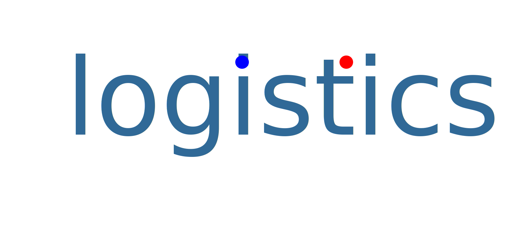

Q: これは何？
A: logisticsは，生体個体数のシミュレーションゲームです．赤丸と青丸が衝突することにより交配して子供を生み出します．
パラメータをいじることで，生物の個体群が急増したり，絶滅したりする様子を見るだけのものです．
Q: 環境定数とは？
A: 環境定数は，個体数と平均寿命の積です．個体数が多くなればなるほど，食料や生息地が限られてしまい長くは生きれられません．
環境定数が大きいことは多くの個体を長く養える肥沃な土地を表し，逆に環境定数が小さいと少数の個体でも長く保てない貧しい土地を表します．
Q: どうしてこれを作ったの？
A: 劉慈欣のSF小説「三体」に登場する文明をシミュレーションするゲーム”三体”をやってみたかったからです．
個体絶滅後のメッセージも，小説内のゲームに出てくる『文明####は〜年で滅亡しました』というメッセージから連想しています．
Q: logisticsの意味は？
A: 生物個体数の数理モデルlogistic方程式から名前を取っています．
しかし，このシミュレーションの結果がlogistic方程式の解に一致するというわけではないです．